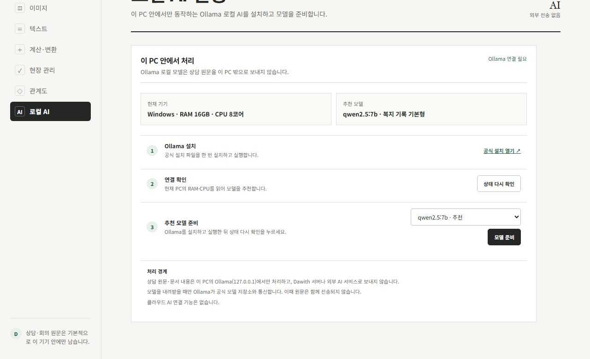

Dawith 복지 업무 도구함
Dawith 복지 업무 도구함프로그램
Dawith 복지 업무 도구함
기능 제한이나 유료 요금제가 없습니다.
붙임 서류 PDF 합치기, 한글 양식 확인, 상담 기록 정리, 개인정보 가리기, 가계도까지. 사회복지사가 매일 하는 서류 작업을 인터넷 없이 내 PC에서 끝냅니다. 누구나 무료로 쓸 수 있습니다.

첫 화면 왼쪽에서 업무 분류를 고르거나 검색창에 하려는 일을 적으면 맞는 도구가 바로 나옵니다.
문서
신청서, 소득 증빙, 등본처럼 따로 받은 PDF를 순서대로 묶어 제출용 한 파일로 저장합니다. 기관에서 받은 한글(HWP·HWPX) 양식도 한컴 한글 없이 열어 내용을 확인할 수 있어요.

파일을 끌어 놓고 순서를 확인한 뒤 한 번에 합칩니다. 파일 이름 앞에 01, 02를 붙이면 순서 맞추기가 쉽습니다.
PDF 나누기에서 쪽 번호만 적으면 그 쪽만 새 파일로 저장합니다. 원본은 바뀌지 않습니다.
HWP·HWPX 파일을 이 PC에서 열고 글자를 꺼내 봅니다. {{기관명}} 같은 표식은 한 번에 바꿀 수 있어요.
TXT·Markdown·HTML·CSV를 서로 바꿔 저장합니다. 게시판이나 다른 프로그램에 옮길 때 씁니다.
기록
방문·전화 상담 뒤 적어 둔 메모를 붙여 넣으면 기록·논의, 사정·결정사항, 서비스계획으로 나눈 초안이 나옵니다. 기본은 AI 없이 규칙으로 정리하고, 원하면 PC 안의 로컬 AI로 다듬습니다.

상담일지, 사례회의 등 기록 유형을 고르면 그 형식에 맞춰 내용을 나눕니다.
관계, 주제, 후속 단서를 위에 따로 보여 줘서 빠뜨린 내용이 없는지 확인하기 쉽습니다.
확정한 기록은 이 PC에 암호화해 저장하고, 필요하면 문서로 내보냅니다.
초안은 어디까지나 초안입니다. 원문과 대조해 고친 뒤 공식 기록으로 쓰세요.
개인정보 가리기
사례 내용을 메신저나 메일로 보내기 전에 붙여 넣기만 하면 전화번호·이메일·주민등록번호·계좌번호가 바로 가려집니다. 이름처럼 규칙으로 찾기 어려운 정보는 ‘찾아 바꾸기’로 한 번에 바꿉니다.

기관 양식
기관명과 담당자를 저장해 두면 회의록, 사업계획서, 결과보고서 틀이 자동으로 채워집니다. 사업명·목적·내용만 적으면 미리보기에 초안이 완성되고, 우리 기관 양식을 직접 만들어 계속 쓸 수도 있어요.

그 밖의 도구
모두 19가지 도구가 한 프로그램 안에 들어 있습니다. 표시가 없는 도구는 AI 없이 이 PC에서만 처리합니다.
AI
AI를 쓰지 않아도 모든 기본 기능이 동작합니다. 기록을 다듬거나 회의록을 정리할 때 AI를 쓰면, 그 AI도 이 PC 안에서 돌아갑니다. 클라우드 AI로 보내는 기능은 처음부터 넣지 않았습니다. 상담 원문은 어떤 경우에도 PC 밖으로 나가지 않습니다.

RAM과 CPU를 읽어 이 PC에서 돌릴 만한 로컬 모델을 골라 줍니다. 설치는 세 단계면 끝납니다.
AI는 Ollama로 이 PC에서 실행됩니다. 인터넷은 모델을 처음 받을 때만 필요하고, 그 뒤에는 끊겨도 됩니다.
AI가 고친 내용은 적용하기 전에 먼저 보여 주고, 마음에 들지 않으면 원래대로 둡니다.
준비 방법은 로컬 AI 준비하기에 정리해 두었습니다.
비용
앱도, 로컬 AI도 무료입니다. 구독료나 API 요금, 사용량 한도가 없습니다.
Dawith 복지 업무 도구함
기능 제한이나 유료 요금제가 없습니다.
Ollama · 이 PC 안에서 실행
요금도 사용량 한도도 없습니다. 원문이 PC 밖으로 나가지 않습니다.
규칙 기반 정리
AI를 준비하지 않아도 기록 정리와 모든 기본 기능을 씁니다.
개인정보
Dawith는 사용 통계를 보내지 않고, 기록은 이 PC에서 열고 저장합니다. AI도 이 PC 안에서만 돌아가므로 상담 원문이 밖으로 나가는 경로가 없습니다.
오픈소스
Dawith도 소스를 공개한 프로그램입니다. 아래 프로젝트 덕분에 만들 수 있었습니다. 라이선스 고지는 저장소에 있습니다.
설치 폴더의 THIRD_PARTY_NOTICES.txt에 포함된 모든 오픈소스의 라이선스 전문이 들어 있습니다.
코드는 가져오지 않고 기능과 설계를 참고했습니다.
설치
아래 버튼으로 Dawith-Welfare-Office-…-Setup.exe를 받습니다. 64비트 Windows 10과 11용입니다.
새로 나온 무료 프로그램이라 Windows가 경고를 띄울 수 있습니다. 막히면 아래에서 지금 보이는 화면을 고르세요.
문의
기능 제안, 오류 제보, 기관 도입 상담 모두 좋습니다. 현직 사회복지사 운영자가 직접 확인합니다.
주소, 주민등록번호, 연락처, 상담 내용처럼 민감한 정보는 적지 말아 주세요.